Private by design
Your data is encrypted with your password and stays on your PC. If you like, Windows Hello opens it in a second.
A private, all-in-one organiser for Windows.
Your tasks, appointments, notes, habits and budget, together in one calm app. Everything stays on your PC.

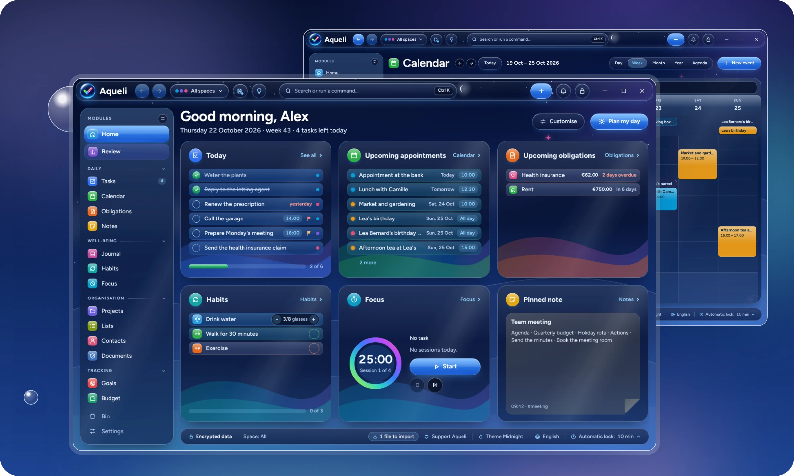
Fifteen modules that work together. Keep the ones you need and hide the rest.
Your day at a glance: what's due, what's coming up and the note you pinned.
Write a task the way you would say it, and Aqueli fills in the date and time.
Your week and month in one view, with public and school holidays already there.
Bills, subscriptions and paperwork, with a reminder before each deadline.
Write freely, sort your notes into notebooks and link them together.
A page a day for how it went, how you felt and what you are grateful for.
Small daily habits, followed over time, so you can see how far you have come.
Time to concentrate, with gentle background sounds and a break when it is due.
Bigger plans broken into steps, with everything they need in one place.
Shopping, books to read, films to watch, gift ideas and anything else.
The people who matter, their birthdays, and everything linked to them.
Important papers kept safe, with a reminder before they expire.
Goals for the year or the month, and the steps that bring them closer.
Where your money goes each month, and how much is left.
A short look back at your week, to see what went well and plan the next one.
Clear screens, soft colours and nothing in the way.
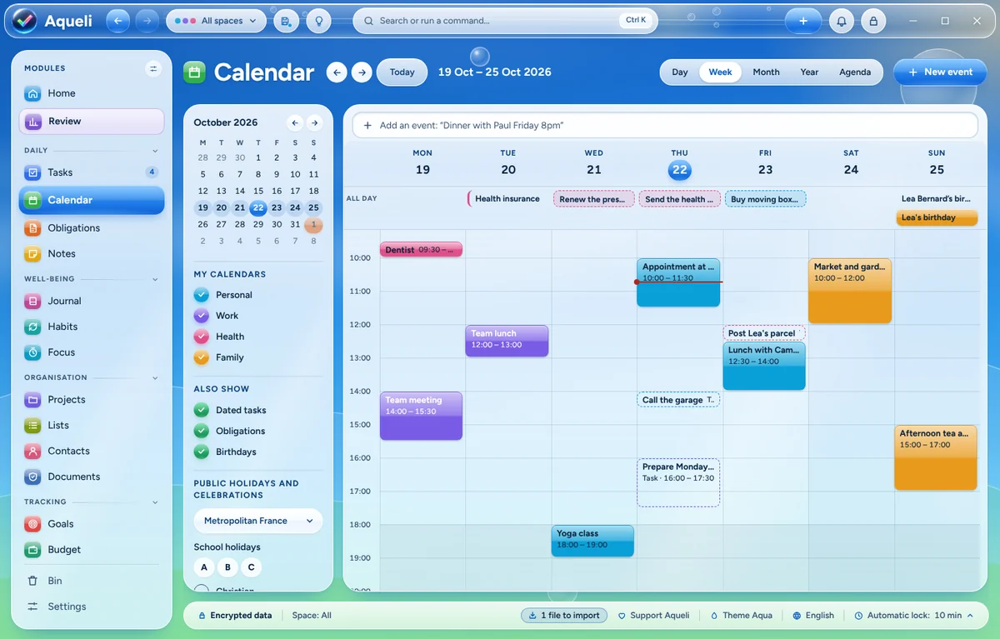
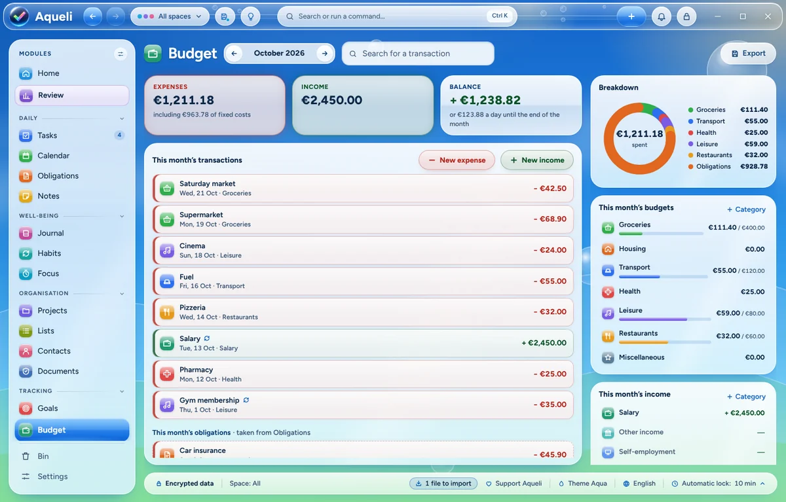
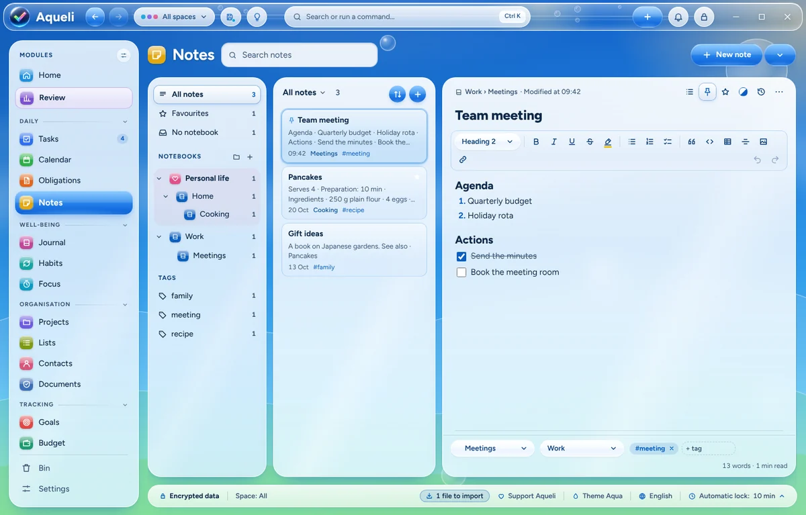
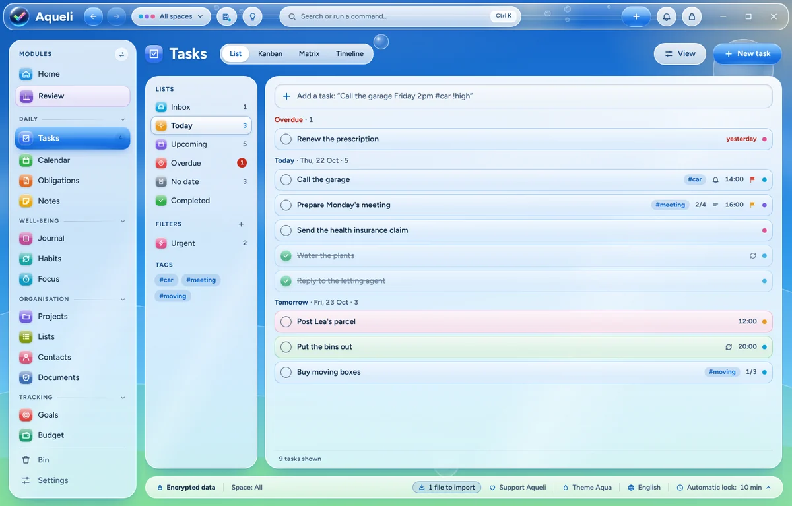
Your data is encrypted with your password and stays on your PC. If you like, Windows Hello opens it in a second.
Find anything from one search bar, jot a thought down from anywhere in Windows, and undo any change.
A task can lead to a note, an appointment to a contact, a bill to its contract. What belongs together stays together.
Import tasks, events and contacts from a spreadsheet, your calendar or your phone, and export them whenever you like.
Aqueli speaks 17 languages. Choose yours when you install it, and change it at any time.
Everything works from the keyboard, with a high-contrast mode and calmer animations when you need them.
31 themes, from bright Aqua skies to quiet starry nights, each with its own illustrations and sounds. They can follow the time of day or the seasons, and you can create your own.
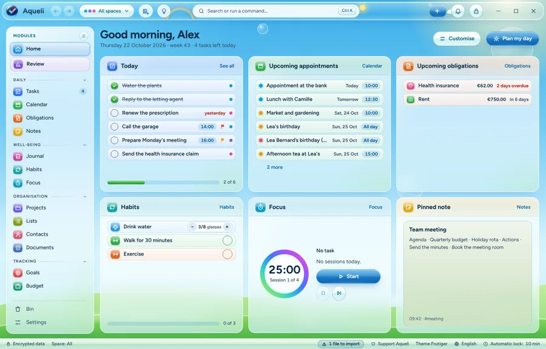
Frutiger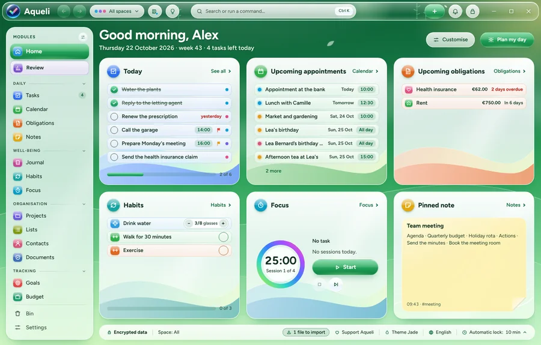
Jade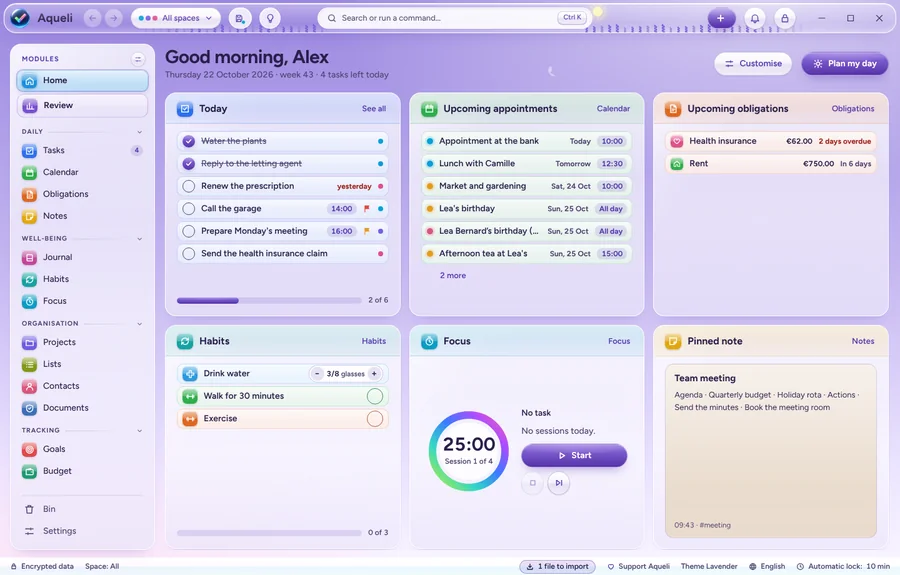
Lavender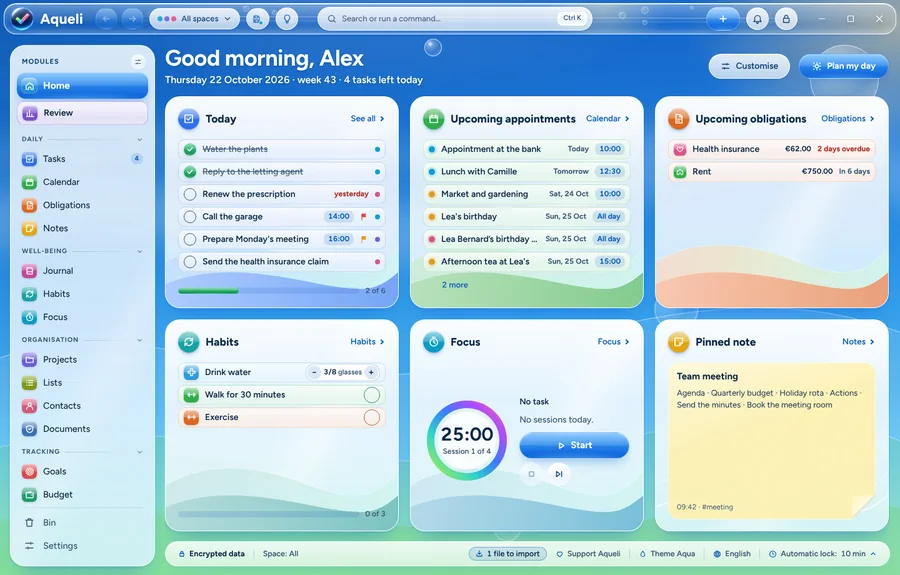
Aqua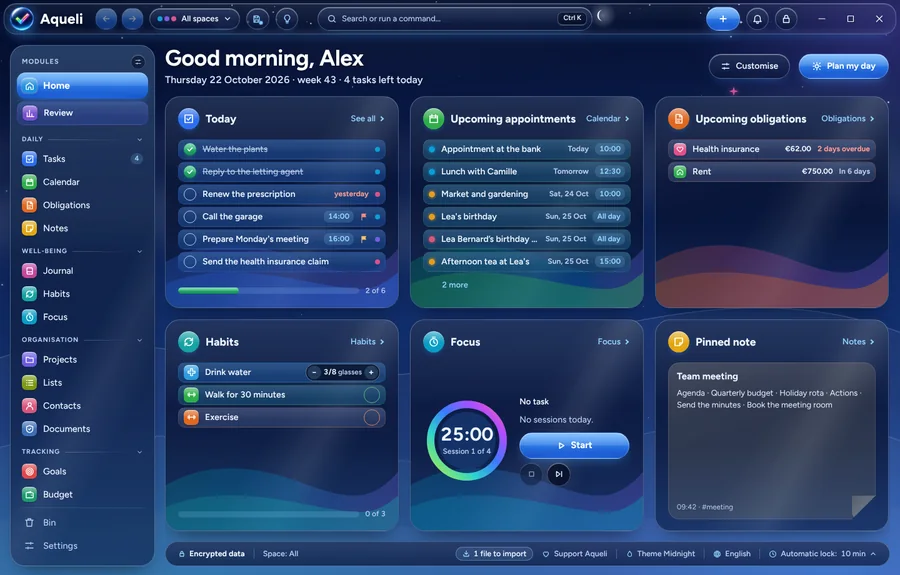
Midnight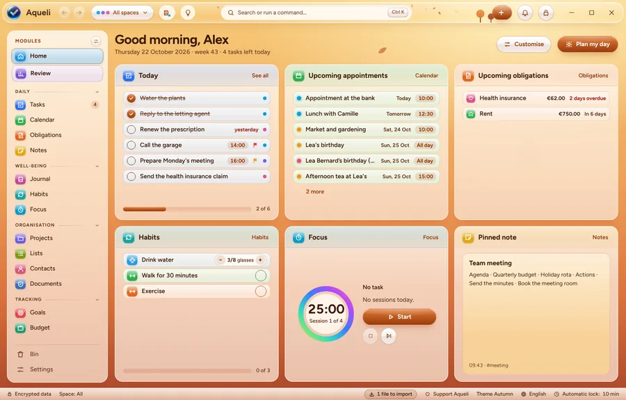
Autumn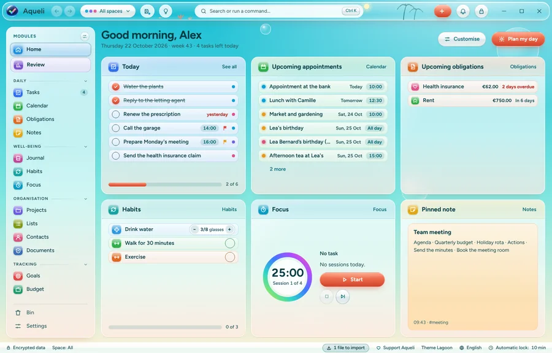
Lagoon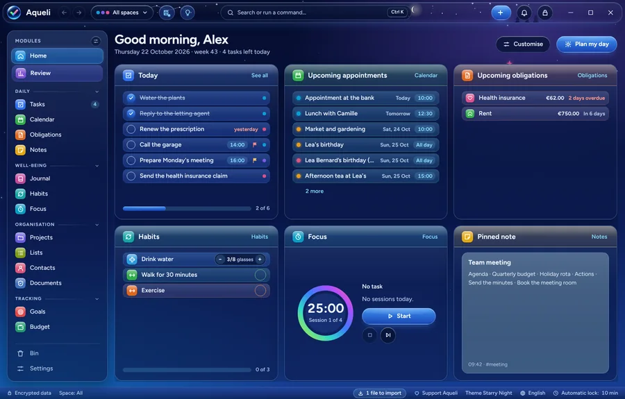
Starry NightKeep your recovery key somewhere safe. As there is no server, it is the only way back in if you forget your password.
Free, for Windows 11. The installer sets Aqueli up for your user account in about a minute, with no administrator rights needed.
Download for WindowsAqueli is not code-signed yet, so Windows may show a warning the first time. Click More info, then Run anyway. Each release lists the installer's SHA-256 checksum.
Aqueli is free, with no ads and no paid version, and it is made by one person. If it makes your days a little easier, you can support its development on Ko-fi.
Support on Ko-fiA star on GitHub or a word to a friend helps too.